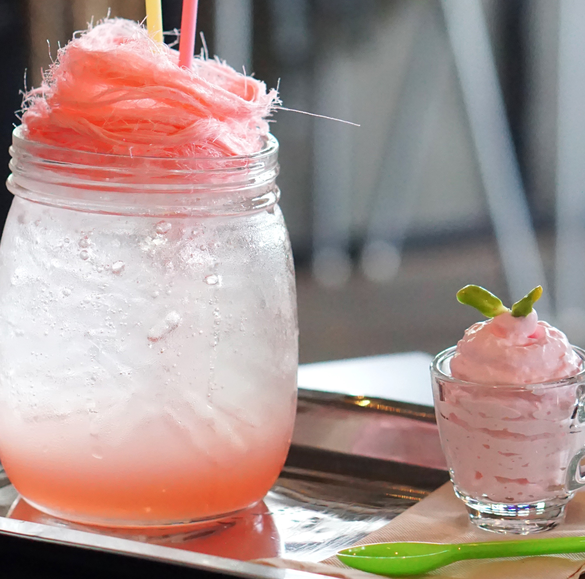

Sweet Cloud of Mine!
I created Sweet Cloud because who doesn't need a little sweetness in their life? We sell everyting you need to make cotton candy for your next party, carnival, fair, or just for fun. Cotton Candy is delicious on it's own or can make a beautiful topping on many foods, drinks, and snacks. Use your imagination and let this soft, fluffy, sweet treat take you down memory lane. I can tell you that the second my taste buds capture that cotton candy, my mind floats into remembrance of my childhood summer days at the county fair.